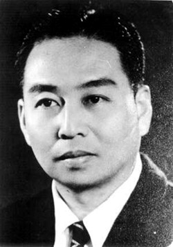
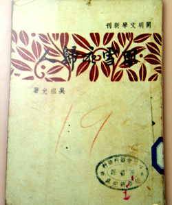
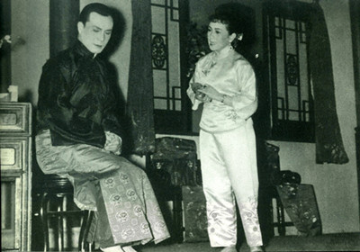

“雾季公演”时期的名人名剧欣赏（二）： 吴祖光与话剧《风雪夜归人》
1937年，抗日战争爆发，重庆作为战时陪都，具有举足轻重的地位。为彻底击垮中国人民的抗日意志，日本侵略者对重庆进行了疯狂的轰炸。但每年10月至次年5月是重庆的雾季，浓雾遮掩，日机无法轰炸。此时，在抗日民族统一战线的指引下，在中共中央南方局和周恩来同志的领导下，重庆的进步戏剧工作者从1941年10月起，有意识的将雾季作为话剧公演的季节，一直延续到1945年，共进行了4季，公演大型话剧103个，独幕剧7个，开创了中国话剧史上的一个黄金时代，俗称“雾季公演”。

吴祖光
在我国当代文艺界，吴祖光不愧为一位多才多艺的作家。他在诗歌、散文、戏剧等方面都有独到造诣。特别是在戏剧领域，他创作了一批脍炙人口的话剧、戏曲作品，还写过电影剧本，当过电影导演……堪称舞台艺术中的“多面手”。当然，最能代表吴祖光创作成就的，还数他的话剧创作。从1937年到1978年的40余年中，吴祖光创作了整整10部大型话剧，而其中有7部都是在抗战时期完成的。
1937年“七七事变”爆发后，刚刚闯入文坛不久的吴祖光创作了人生的第一部话剧《凤凰城》，这也是我国第一部抗战题材的话剧，这一年，他才20岁。1938年初，吴祖光以国立戏剧专科学校校长室秘书的身份来到重庆，不久，《凤凰城》在国泰大戏院首演，引起轰动，成为全国戏剧界与日本侵略者进行斗争的有力武器，演遍大后方。周恩来观看此剧后，给予吴祖光很高的评价：“吴祖光有才气，有爱国思想，他是神童！”
在重庆生活、工作期间，吴祖光为搜集创作素材，常深入民间，到茶馆与人聊天，或到戏院看戏、与戏迷们交流。一次，有位戏友向吴祖光讲了一个故事：四川省城有一位身世悲惨的女子，被迫嫁给了当地以走私鸦片起家的“黑帮老大”，做了姨太太。后来，她与一位遭遇相近的京剧演员一见倾心，决定私奔，去追求自由幸福的生活。谁料二人双双被捉，女子被转卖，男子被打残……听了这样的故事，吴祖光心潮难平。他是北京人，从小喜欢泡在戏园子里听京剧，他对受压迫受侮辱的戏曲艺人怀有浓厚的同情心。根据这个听来的故事，1942年，吴祖光在归元寺中央青年剧社的一间小黑屋里，写出了话剧剧本《风雪夜归人》。

《风雪夜归人》剧本
《风雪夜归人》写一位渴望自由与爱情的官家姨太太玉春与一位唱花旦的戏曲演员魏莲生相爱的故事。剧中，一方面是玉春不满那吃人的社会，极力反抗黑暗，追求光明；一方面是官家群丑倒行逆施，纸醉金迷，荒淫无耻至极。两条线索形成了强烈的对比。吴祖光将现实中的“黑帮老大”改为“法院院长”，暗讽当时国民政府官员在大后方花天酒地、醉生梦死的生活，揭露黑暗，切中时弊，很有现实意义。
以前，吴祖光对待自己的作品，常常觉得写得不好而心生懊悔。但写《风雪夜归人》剧本时，他感到自己写了自己所熟悉的梨园生活，写了自己所爱好的人，也发现自己就隐藏在这部作品的角落里，他与戏已经融合了一起，因此创作起来得心应手、酣畅淋漓。
1943年2月25日，话剧《风雪夜归人》由中华剧艺社在重庆抗建堂（今重庆市渝中区七星岗上纯阳洞13号）上演。剧中玉春由女演员路曦饰演，魏莲生由“话剧皇帝”项堃饰演。导演贺孟斧知识渊博，极富才华。剧中玉春与魏莲生第一次见面和玉春倒退着恋恋不舍地走下场去的处理，以及那枝象征着爱情的海棠花的运用，至今仍传为舞台佳话。

《风雪夜归人》剧照
《风雪夜归人》开演以来，抗建堂前天天挤满购票的观众。周恩来也是这部剧的忠实观众，他曾屡屡登上纯阳洞那200多级的高坡，7次观看该剧。这出戏也是他毕生看的次数最多的一出话剧。当时有评论认为，戏里完全是旧社会戏子与官家姨太太的恋爱故事，没有意义。为此，周恩来还曾专门组织身边的人进行了讨论，认为这个剧本对封建社会的腐朽作了深刻的揭露，对最遭卑视的艺人寄予了深厚的同情，是对旧社会强烈的控诉。
然而，好事多磨，该剧在3月13日演至第14场时，蒋介石行营办公厅主任钱大钧带着姨太太来看戏，看到中途便拂袖而去。第二天，这出戏就以“诲淫诲盗”的罪名被禁演了。个中原因，不言而喻。
紧接着，周恩来亲自指示《新华日报》等媒体组织文章，支持和肯定《风雪夜归人》的积极意义，反击国民党对演出的阻挠。同年3月15日，《新华日报》用整版的篇幅登载章罂等人的6篇署名文章，肯定《风雪夜归人》的反封建主题、诗一般的意境和精湛的表演。吴祖光后来才知道，所谓章罂，就是周恩来当时的秘书张颖。张颖告诉吴祖光，自己那篇《评<风雪夜归人>》的文章，实际上是周恩来亲自授意让她写的，文中的观点，实际上也就是周恩来的见解和意见。
《风雪夜归人》被禁演2年后，在1945年重庆谈判期间，该剧才以为贫病辞世的导演贺孟斧遗孀募捐的名义，再次在抗建堂上演。
吴祖光在重庆期间，先后创作了《正气歌》《风雪夜归人》《少年游》《牛郎织女》《林冲夜奔》等剧本。其中，以《风雪夜归人》取得的成就最大。抗战胜利后，吴祖光又将这部话剧改编成同名电影故事片，并亲自导演。这部电影由香港大中华影业公司摄制，在香港和大陆热映，场场爆满，再一次掀起了观片狂潮。